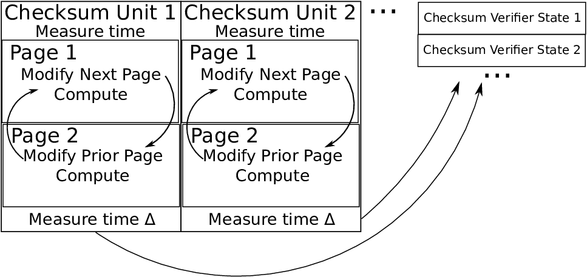

The tamper-proofing threat model, security theorem, assumption necessity, and adversary-level analysis are formalized and machine-checked in Lean 4 without Mathlib, with a public repository.
Abstract
Classical computability theory tells us that self-modifying code (SMC) on a deterministic universal Turing machine can be simulated by non-SMC code on the same model. That abstraction, however, omits the external timing inputs, concurrency, and microarchitectural state that dominate practical execution on modern processors. We argue that once timing, ordering, and self-introspective effects are treated as observables, a practically faithful non-SMC reproduction of timed SMC becomes detectably expensive on commodity systems. We present a tamper-proofing model that combines introspective and polymorphic SMC, reliable clocks, and runtime timing predicates to bind integrity checks to execution behavior. We distinguish static and dynamic SMC generation, characterize the timing semantics needed to avoid catastrophic pipeline clears, and give x86-64 design primitives for checksum-driven self-patching. We also report timer measurements, performance comparisons, and performance-monitoring counter evidence showing that careful engineering - especially loop unrolling and cross-page modification - substantially reduces the overhead of SMC while preserving its tamper-detection value. The paper concludes with an efficiency analysis, a threat model, and deployment guidance for trusted code executing in untrusted environments. The threat model is formalized in Lean 4, relative to an explicit platform contract: the security theorem, the necessity of each assumption and which assumptions each adversary level satisfies or breaks are machine-checked, and the development is registered with the Palomar registry.
Problem
Classical computability says self-modifying code (SMC) can be simulated by non-SMC code. That abstraction ignores timing, concurrency, and microarchitectural state. The question is whether timed SMC can serve as a practical tamper-proofing mechanism whose faithful non-SMC emulation is detectably expensive.
Approach
A tamper-proofing model combines introspective and polymorphic SMC, reliable clocks, and runtime timing predicates. It includes static and dynamic (AsmJit-generated) x86-64 checksum kernels that patch arithmetic opcodes in place. Loop unrolling and cross-page modification avoid pipeline machine clears. The threat model is formalized in Lean 4 relative to an explicit platform contract, covering the security theorem, the necessity of each assumption, and which assumptions each adversary level satisfies or breaks.

Figure 1: Design overview of checksum units and state verification.
Results
Static SMC runs about 7.9x slower than its non-SMC counterpart. Dynamic two-page SMC runs about 90.5x faster than the timing-constrained non-SMC emulation and 17.8x faster than static SMC. The Lean development is machine-checked and registered with the Palomar registry, and the repository includes further checks of layout and timing arithmetic.
Variant
Avg.
Min.
Max.
Dynamic SMC
467286
414188
2158056
Non-SMC
42300840
39600010
74295022
Dynamic SMC vs. non-SMC timing (RDTSCP cycles, 10,000 runs)